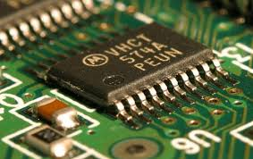
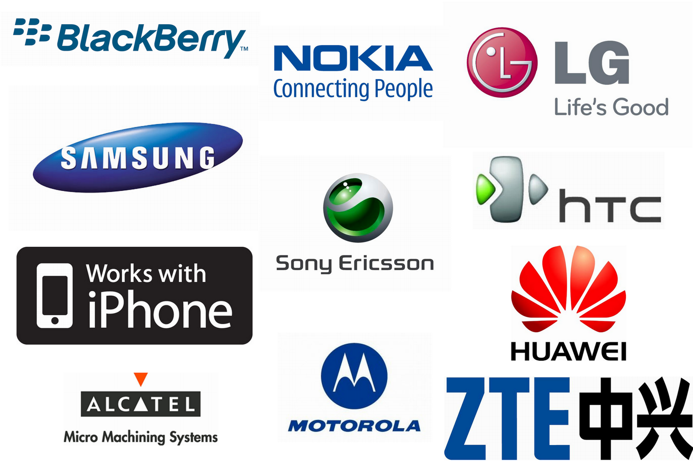

Como ahorrar bateria del celular

Autor: Javier Rafael Espinosa Mijangos
Mantener por varias horas la bateria del celular a veces puede ser complicado, ya sea por el uso
intensivo que se les da o por la mera vida util que le queda, en este apartado puedes ver algunos
tips que pueden lograr que tu bateria dure más tiempo, por ende, utilizando mas tiempo el celular.
+ Info
Elementos a tomar en cuenta de un celular

Autor: Javier Rafael Espinosa Mijangos
El buen funcionamiento del celular es importante,
algunas piezas no deben de pasar desapercibidas, ya que nos pueden ayudar a comprar un buen
celular, esto es conocido como "calidad-precio", en esta seccion
te menciono las mas importantes y fundamentales a tener en cuenta
+ Info
Accesorios imprescindibles para el celular

Autor: Javier Rafael Espinosa Mijangos
Esta claro que el celular es parte importante de nuestro dia a dia, pero algunos accesorios son
importantes de tener a la mano hasta cierto punto, en esta seccion te muestro algunos accesorios
que no pueden faltar para usarlo de mejor manera.
+ Info
Marcas de celulares con mayor reputacion

Autor: Javier Rafael Espinosa Mijangos
Los celulares tienen un "sello" puesto por diversas marcas alrededor del mundo, estas mismas
se encargan de distribuirlos por todos lados, en esta seccion te mencionare algunas marcas que son
conocidas en todo el mundo y con muy buena reputacion.
+ Info